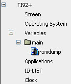
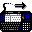

TiLP can perform the following operations:
Depending on the calculator type, some functions may be unavailable. The chart below sums up the available operations:
| 73 | 82 | 83 | 83+/84+ | 85 | 86 | 89 (tm) |
92 | 92+ | V200 |
|
| Ready | * | * | * | * | * | * |
||||
| Screenshot | * | * | * | * | * | * | * | * | * | * |
| DirList | * | * | * | * | * | * | * | * | * |
|
| Variables | * | * | * | * | * | * | * | * | * | * |
| Backup | * | * | * | * | * | * | * | * | * | * |
| FLASH apps | * | * | * | * | * |
|||||
| OS upgrades | * | * | * | * | * |
|||||
| ROM dump | * | * |
* | * | * | * | * | * | * | * |
| Remote control | * |
* | * |
* | * | * | * | * |
||
| Clock | * |
* |
* |
* |
||||||
| Version |
* |
* |
* |
* |
* |
|||||
| Create folder / Delete variable |
* |
* |
* |
* |
* |
All operations are available from the toolbar
or by Drag and Drop (DnD for short).
DnD works in 2 ways:
- from the calculator frame to the computer frame,
- from the computer frame to the calculator frame.
| Click this icon to check whether your
calculator is ready for transmission. Usually, you don't need to use it
since TiLP automatically uses this operation whenever you do a
transfer, but it may be useful to restore the connection after an error. |
| Get a list of folders, variables, and applications stored on the calculator. The resulting tree is displayed in the calculator frame. |
|  |
|
About selections: - the base nodes (TI92+, Screen,Operating System, Variables, Applications, ID-LIST, Clock) can be double-clicked or dragged. - dragging a folder selects all variables beneath the folder during the drag operation only. - you can use mouse or keyboard for selecting one or more items. - multiple items can be selected by clicking them and maintaing the Shift (or Ctrl) key pressed. You can use the arrows keys, too. - Ctrl+A selects all items whereas Ctrl+Shift+A unselect them all. - if you want to drag several files, select them and keeps the Shift key pressed while dragging. |
| Backup the calculator data. On FLASH calculators, the backup is not a true backup, it's a group of all variables (83+/89/92+/V200PLT) but attributes are kept (locking/archiving), but FLASH applications are not saved. On the other calculators, the backup is a memory copy and contains the whole calculator content. Alternate way: by double-clicking the Variables node. | |
| Restore the calculator content by sending a previously received backup. Contrary to TI's software, variables will stay archived if they were archived before the backup. |
1°) The calculator frame lists variables and applications stored onto your calculator. By clicking on an item, you can select one or more variables/applications.
Next, drag the selection to receive variables/applications if the calculator support directory listing. Else, use the Receive button (TI82/85).2°) The computer frame lists the files in your current folder like displayed at the bottom. You can change folder by double-clicking the
The main window only contains the remote view
(calculator). You have to use the Send
& Receive toolbar
buttons for operations.
 |
Open a file selector which lets you select one or more files to send. Allowed files are variables, applications or operating systems. |
|  | Same behaviour as explained in
the full GUI mode (2°). |
If you have enabled the confirm deleting/overwriting
option,
TiLP will
do a
directory list before sending your variables / applications.
Next, it will display the
following window :

TiLP will display all variables which already
exists on the calculator and will wait for an action. Select one or
more
items with mouse or keyboard and use one of the 3 buttons (Overwrite, Rename, Skip) to change the action. Note :
attribute can not be changed yet.
By double-clicking the top node (TI92+
for instance), TiLP will display OS version, BIOS version (boot-loader)
and battery status.
Beware: a backup should be done before doing a ROM dump because ROM dumping uses an assembly program which may corrupt or crash your calculator.
This operation will transfer a small assembly
program to your calculator. If your calculator model has remote control
(89/92/92+/V200), the program will be automatically launched and the
ROM
will be dumped. Otherwise, TiLP will wait for you to execute the
assembly program.
Calculators based on FLASH technology (TI83+,
TI84+, TI89, TI92+ and V200PLT) have a unique identifier in their
memory. This
identifier can be requested for subscription on the TI online store and
is needed for buying/signing FLASH applications.
Double-click the Clock item to set/get clock:

Use the remote popup menu to create a folder on calc.
Select one or more variables or applications and use the remote popup menu to delete them.